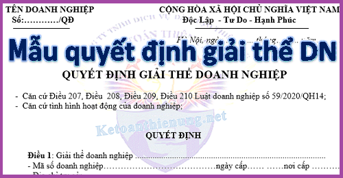

Mẫu Quyết định giải thể giải thể Doanh nghiệp, giải thể Công ty mới nhất để làm thủ tục giải thể Doanh nghiệp, tải mẫu quyết định giải thể Công ty tại đây. Đây là mẫu do kế toán Diệu Tâm thiết kế để các bạn tham khảo:
| TÊN DOANH NGHIỆP | CỘNG HÒA XÃ HỘI CHỦ NGHĨA VIỆT NAM |
| Số:…………/QĐ | Độc Lập - Tư Do - Hạnh Phúc |
Hà Nội, ngày… tháng…… năm 2022
QUYẾT ĐỊNH GIẢI THỂ DOANH NGHIỆP
- Căn cứ Điều 207, Điều 208, Điều 209, Điều 210 Luật doanh nghiệp số 59/2020/QH14.
- Căn cứ tình hình hoạt động của doanh nghiệp;
QUYẾT ĐỊNH
Điều 1: Giải thể doanh nghiệp .......................................
- Mã số doanh nghiệp…………ngày cấp…… ……nơi cấp ………..
- Địa chỉ trụ sở:………………………………….
Điều 2: Lý do giải thể: ...............................................
Điều 3: Thời hạn, thủ tục thanh lý các hợp đồng đã ký kết:
- Các hợp đồng đã ký kết, đang thực hiện: (nêu rõ nội dung hợp đồng, thủ tục và thời hạn thanh lý hợp đồng. Lưu ý: thời hạn thanh lý không vượt quá 6 tháng kể từ ngày quyết định giải thể).
- Kể từ thời điểm quyết định giải thể, doanh nghiệp không ký kết hợp đồng mới không phải là hợp đồng nhằm thực hiện giải thể doanh nghiệp.
- Không được chấm dứt thực hiện các hợp đồng đã có hiệu lực.
Điều 4: Thời hạn, thủ tục thanh toán các khoản nợ:
- Doanh nghiệp còn các khoản nợ: (Doanh nghiệp nêu rõ từng loại nợ đối với khách hàng, đối với cơ quan thuế, bảo hiểm xã hội và các khoản nợ khác, thời điểm thanh toán. Lưu ý: Thời hạn thanh toán nợ không được vượt quá 6 tháng, kể từ ngày thông qua quyết định giải thể.)
- Kể từ thời điểm quyết định giải thể, doanh nghiệp không huy động vốn dưới mọi hình thức.
Điều 5: Xử lý các nghĩa vụ phát sinh từ hợp đồng lao động:
Doanh nghiệp sử dụng ………. (nêu số lượng lao động). Thời hạn thanh toán các khoản lương và trợ cấp cho người lao động, xử lý tất cả các nghĩa vụ phát sinh từ hợp đồng lao động chậm nhất là vào ngày / / .
Điều 6: Thanh lý tài sản sau khi thanh toán hết các khoản nợ và chi phí giải thể doanh nghiệp (nếu có)
Ông/bà …. là Chủ doanh nghiệp trực tiếp tổ chức thanh lý tài sản còn lại (nêu rõ các loại tài sản còn lại và phương thức thanh lý)
Điều 7: Ông/bà …. là Chủ doanh nghiệp …............phải liên đới chịu trách nhiệm thanh toán quyền lợi của người lao động chưa được giải quyết, số thuế chưa nộp, số nợ khác chưa thanh toán và chịu trách nhiệm cá nhân trước pháp luật về những hệ quả phát sinh trong thời hạn 05 năm kể từ ngày nộp hồ sơ giải thể doanh nghiệp đến Cơ quan đăng ký kinh doanh.
Điều 8: Quyết định này được niêm yết công khai tại trụ sở doanh nghiệp và trụ sở các đơn vị phụ thuộc của doanh nghiệp, được gởi đến các chủ nợ kèm phương án giải quyết nợ, được gởi đến người lao động, được gởi đến người có quyền và nghĩa vụ liên quan, gởi đến cơ quan Nhà Nước.
Điều 9 : Quyết định này có hiệu lực từ ngày ký.
| Nơi nhận | ĐẠI DIỆN PHÁP LUẬT CÔNG TY |
| - Như điều 8; | (Ký, đóng dấu và ghi rõ họ tên) |
| - Lưu. |
Tải Mẫu thông báo giải thể doanh nghiệp về tại đây:
Trường hợp bạn không tải về được thì làm theo cách sau:
Bước 1: Comment mail vào phần bình luận bên dưới
Bước 2: Gửi yêu cầu vào mail: ketoandieutam@gmail.com (Tiêu đề ghi rõ Tài liệu muốn tải)
--------------------------------------------------------------------------------------------
Xem thêm: Thủ tục giải thể doanh nghiệp
------------------------------------------------------------------------
